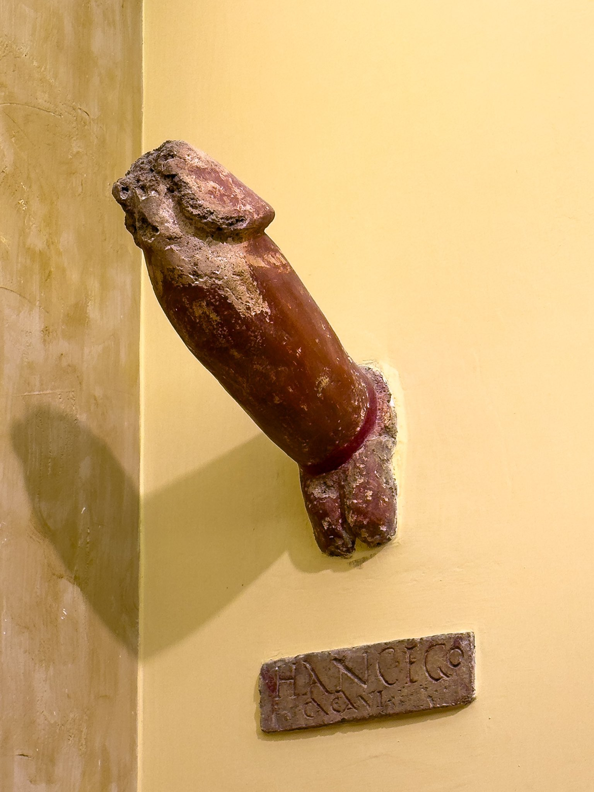
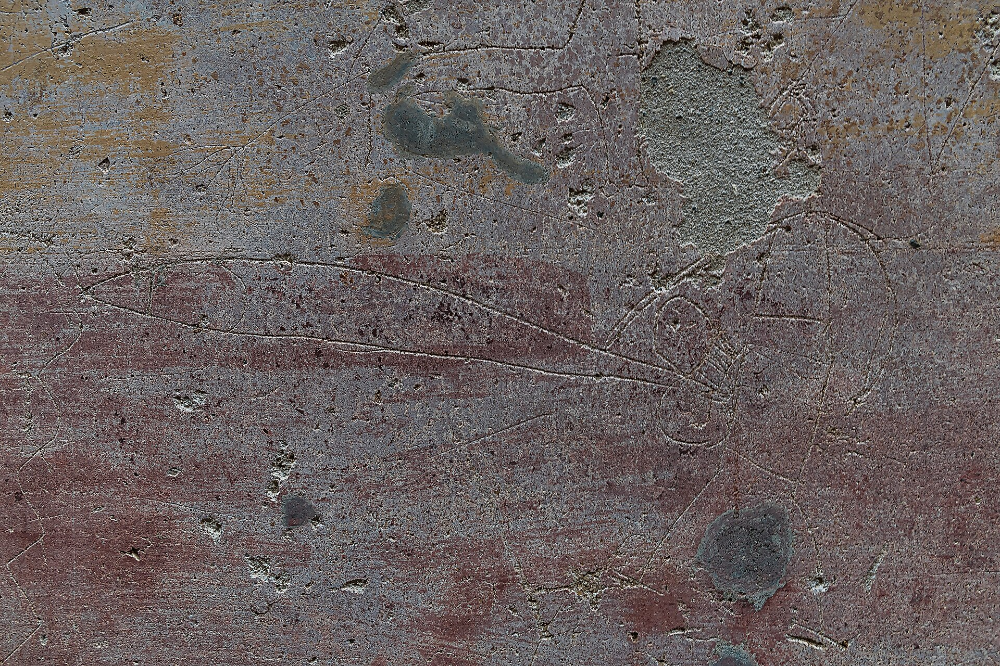
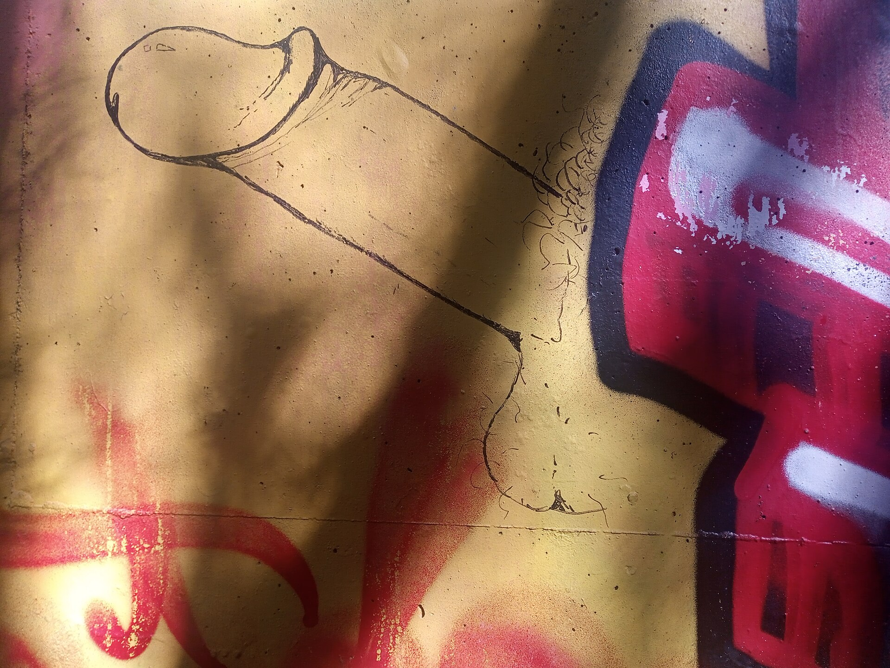
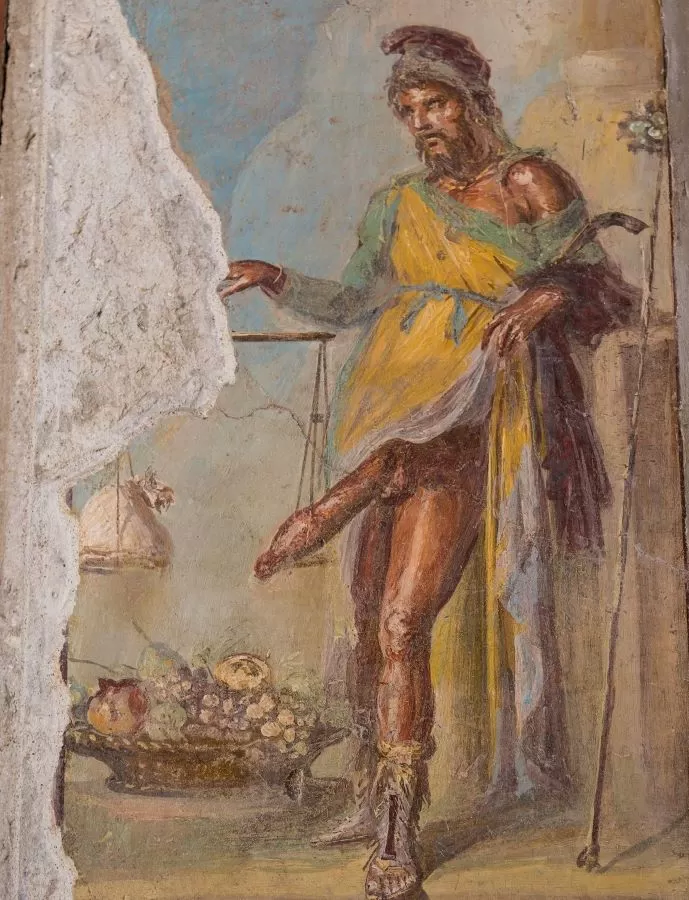

Bodleian Library, Oxford. Early May.
XIXth century rules of textual criticism, palaeography of medieval manuscripts, humanists’ conjectures, Bentley-Luchs’ norm on iambic metre. Romans? Probably never wrote a line of poetry without a German golden-pince-nez-bowtie-stiff-detachable-collar philologist lecturing them.
Ran to the loo. Massive shit. Tiles gleaming white, silicone caulk squeezed tight between them. Smell antiseptic, sterile, absurdly posh. Ridiculous. Don’t we need the aroma of urea and shit? Maybe the rumbling sound of someone else trying to relieve their bowels?
Idea strikes. At least something to read. Charcoal, chalk, a fibula? Whatever pointed. Better: some atramentum tectorium to paint all over the walls? Ended up taking a pen (remember: NO PENS ARE ALLOWED IN THE MANUSCRIPTS' ROOM).
Write something smart. Bear in mind the pedantic orthodoxy (not all of the rules should be fucked…).
eadem continet vaporem et eadem vellit mentulam1 [A hairy cunt is fucked much better than a shaved one;
it retains the heat and tickles the cock]
Error? Of course. Who notices. Surely my friend D., strict lecturer in Latin. Memento, amice: "Knowledge rests not upon truth alone, but on error also" (C. Jung, Freud and Psychoanalysis, Collected Works 4, Princeton, University Press, p. 774). Do you know that if I weren't a philologist — am I really one? — I'd have been a psychoanalyst? Lacanian school, obviously.
Not satisfied. Trousers still down. Need more scandal.
Then I draw a flipping prick, "a big chancrous cock laid open longitudinally" (H. Miller, Tropic of Cancer, Paris, Obelisk Press, 1934). And I write near both sides:
We ended up getting into a club that night. Again, the loo. I won't say what two people were talking about in the corner. Tiles written with everything: no hierarchy, just accumulation. Call 0573364 for great blowjobs; A sad lesbian needs donation; I have fucked here, 'twas great.
I added something more exotic:
χαίρουσιν ἄμφω λαμβάνοντες κέρματα
κινούμενοί τε καὶ διατρυμώμενοι
βινούμενοί τε και διεσπεκλωμένοι
γομφούμενοί τε και διασφηνώμενοι
…4
both delight in taking cash,
in being screwed and bored through,
fucked and smashed,
doweled and wedged apart
…]
Ancient and contemporary. OBSCENE. All of it.
Il porno si instaura dopo la morte del desiderio – morto sacrificato eros – l'aldilà del desiderio. Quando tu fai qualcosa al di là della voglia, la voglia della voglia, questo è il porno. E' una svogliatezza. Il porno è il manque, è quanto non è.5
This is what we look for with the obscene? Is this what theatre and (sexual) graffiti represent, both, and in a similar way, ancient and contemporary?
The light turns back brighter. Hallucination and nightmare, I guess. Adjusted my Marinella tie with blue-damasque decorations, an automatic gesture. Moved further Ribbeck's Latin comic theatre fragments (1898) and the last issue of the Pompeian graffiti (vol. 4.3). I went on: if I follow manuscript H, this might be an iambic senarius (ia6), but it would violate Bentley-Luchs; if we split the text they might be two incomplete trochaic septenarii (tr7). Good idea.
Gallery · Parietes around the world







E scriptis mentem concipit ille meis6 [Hodus says that our life is not modest:
he understood this from my writings]
Dear reader,
before you pass judgement on the pages you have just read, before you dismiss them as merely indecorous or gratuitous, allow a brief appeal. What you have encountered belongs, fully and legitimately, to the domain of literature. It is not an aberration at its margins, but one of its oldest and most persistent voices. From Aristophanes to Martial, from Pacifico Massimi to Marquis de Sade, from Allen Ginsberg to Pierpaolo Pasolini—and one might easily continue—the obscene has been written, read, condemned, and preserved.
To study such material is not to indulge it uncritically, nor to celebrate it naïvely, but to understand it. This is, in part, the task of certain scholars within Classical Philology: to confront the totality of human expression transmitted through ancient texts, including what is coarse, transgressive, or socially marginal. The philologist does not avert their gaze; rather, they ask how such words came to be written, transmitted, edited, censored, or emended.
A crucial body of evidence in this respect is that of ancient graffiti. By ‘graffiti’ we mean informal inscriptions scratched, incised, or painted on walls, pottery, or other surfaces—often anonymous. The ancient cities preserve thousands of such texts: political slogans, declarations of love, advertisements, insults, and, not infrequently, obscenities. Alongside graffiti stands the tradition of comic theatre, where obscenity is neither accidental nor marginal, but structurally embedded. Sexual explicitness, scatology, and verbal aggression are functional.
You may find it useful, at this point, to compare these ancient phenomena with their contemporary counterparts. The inscribed walls of Pompeii are not so distant, in function, from the public feeds of today. An ancient wall, layered with names, insults, erotic boasts, replies, and counter-replies, resembles, in many respects, the open ‘bacheca’ of platforms such as X: a shared surface where multiple voices accumulate and interact in full view of others. Theatre, too, offers a revealing parallel. The ancient comic stage, with its obscenities, finds echoes in contemporary forms of performance, e.g. stand-up comedy or certain strands of online video culture, where transgression and the testing of limits remain central.
What persists, across these forms and across time, is not simply obscenity itself, but the human need to give voice to what formal discourse excludes: to write what is ‘off-stage’, yet insistently present.